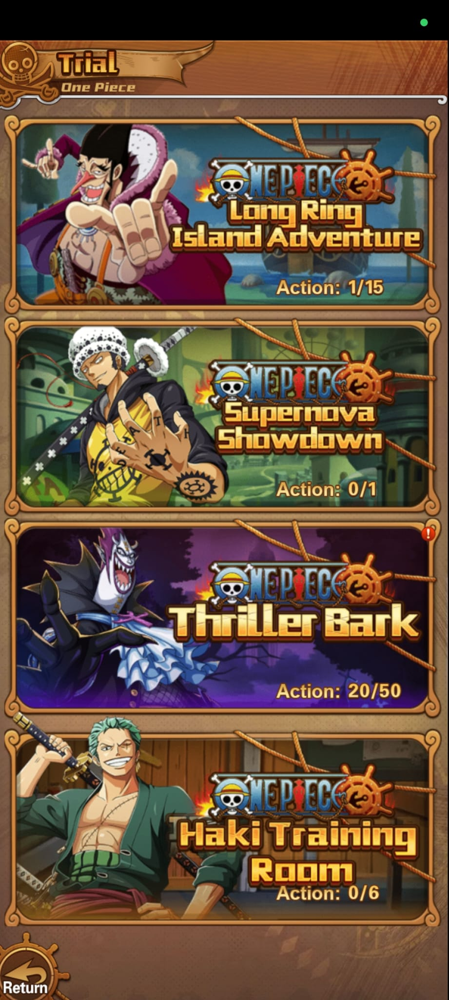
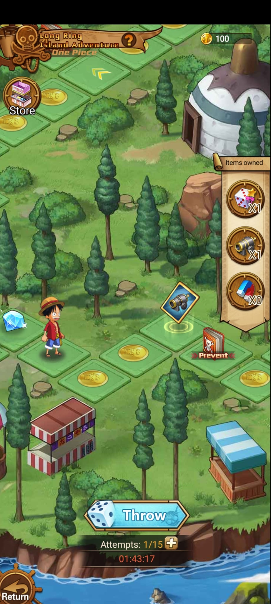
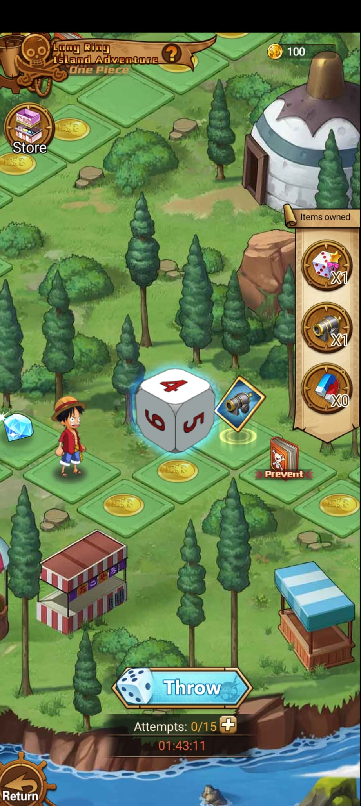
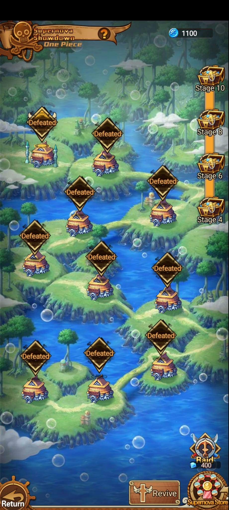
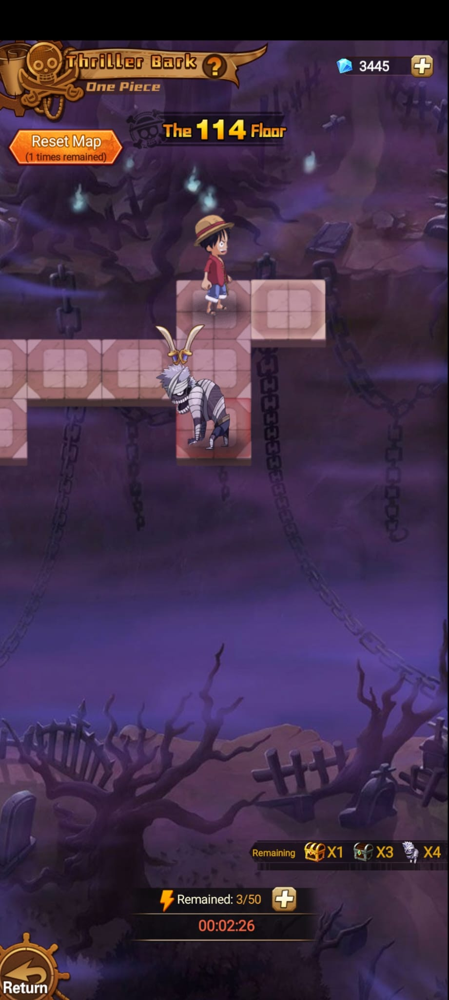
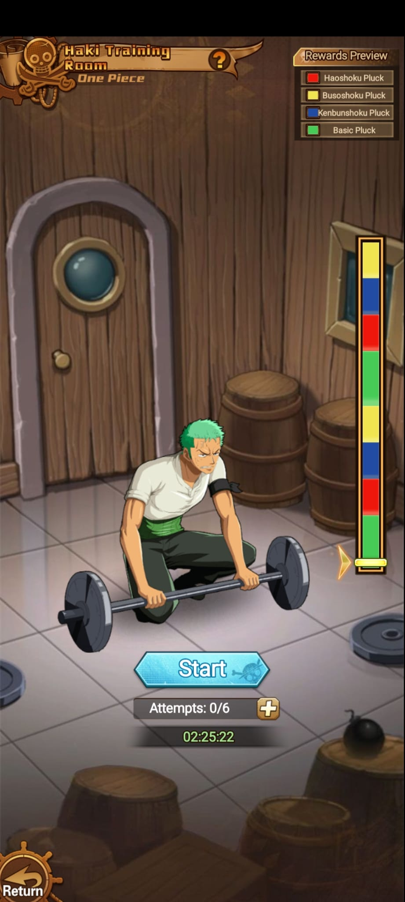

Captura
Lista de pruebas

Modo de desafÃos
Trial reúne varios desafÃos separados por temática. Cada entrada muestra un contador de acciones disponibles o progreso diario.
Captura

Modos visibles
| Prueba | Personaje destacado | Acciones visibles | Notas |
|---|---|---|---|
| Long Ring Island Adventure | Foxy | 1/15 | Modo de aventura con varias acciones disponibles. |
| Supernova Showdown | Trafalgar Law | 0/1 | DesafÃo de una acción, probablemente intento diario o jefe especial. |
| Thriller Bark | Gecko Moria | 20/50 | Entrada marcada con aviso rojo. Tiene muchas acciones acumuladas. |
| Haki Training Room | Roronoa Zoro | 0/6 | Prueba relacionada con entrenamiento o mejora de poder. |
Dentro de cada prueba





Funcionamiento
| Modo | Tipo | Recursos / intentos | Lectura practica |
|---|---|---|---|
| Long Ring Island Adventure | Tablero con dado | Moneda 100, Attempts 1/15 -> 0/15, items owned | Tiras con Throw, avanzas por casillas y puedes usar items como dado especial, cañon o Prevent. |
| Supernova Showdown | Mapa de stages | Moneda azul 1100, Raid cuesta 400 | Los nodos derrotados quedan marcados como Defeated; tiene Revive y Supernova Store. |
| Thriller Bark | Pisos / recorrido | Floor 114, Remaining 3/50, Reset Map 1 vez | Avanzas por casillas del piso, quedan cofres/enemigos visibles y el timer controla el ciclo. |
| Haki Training Room | Entrenamiento de barra | Attempts 0/6, timer 02:25:22 | Start inicia el entrenamiento; la recompensa depende del color donde caiga la barra. |
Recompensas
El tablero muestra monedas de casilla, diamantes y objetos de uso directo. Tambien tiene Store propia para gastar la moneda del modo.
El progreso esta organizado por stages pares visibles: 4, 6, 8 y 10 en el costado. Raid permite gastar moneda para repetir o cobrar progreso rapido.
Usa energia/remaining y muestra cofres restantes. El reset map permite reiniciar el recorrido una vez cuando el mapa no conviene.
Rewards Preview lista Haoshoku Pluck, Busoshoku Pluck, Kenbunshoku Pluck y Basic Pluck. Los colores de la barra coinciden con esos premios.
Pendiente de confirmar
Falta capturar qué da cada prueba al completarla.
Falta saber si los intentos se reinician diario o por evento.
Falta registrar requisitos de poder, enemigos y mejores equipos.